Resume
Personal Detail
เกิดวันที่ 24 พฤษภาคม
อายุ 23
เชื่อชาติ ไทย
จบปริญญาตรีจาก มหาวิทยาลัยเทคโนโลยีพระจอมเกล้าพระนครเหนือ วิทยาเขตปราจีนบุรี GSA 2.93
Work Experience
-
ประสบการณ์ 1 ปี ที่ บริษัท Bluebik Group Co., Ltd. ตำแหน่ง งาน Software engineer หลักๆเขียน frontend
ตัวอย่าง Project
1. Ais Statup Content (responsive) หน้าที่ (frontend)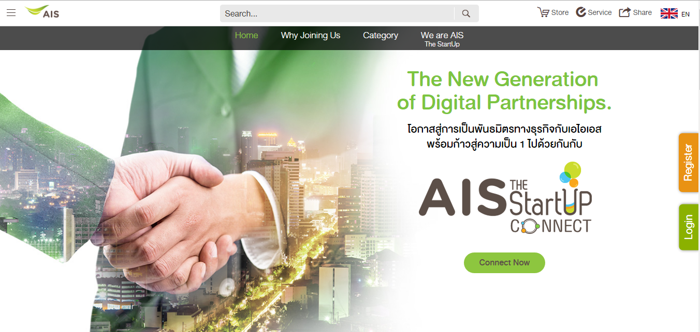 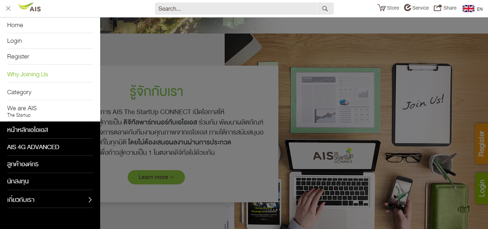
http://www.ais.co.th/thestartup/
2. Ais Statup System (responsive) หน้าที่ (frontend)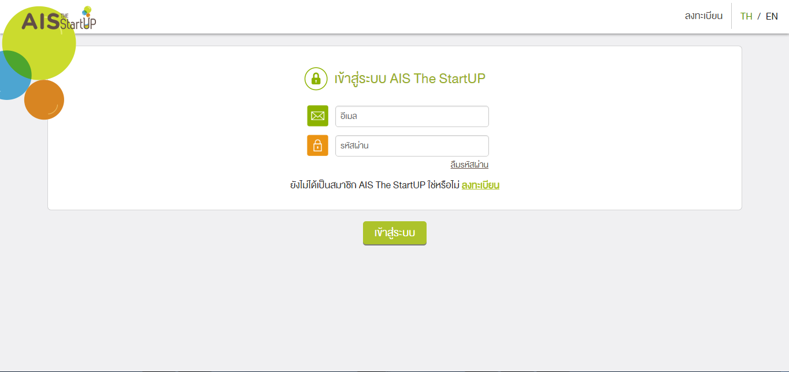 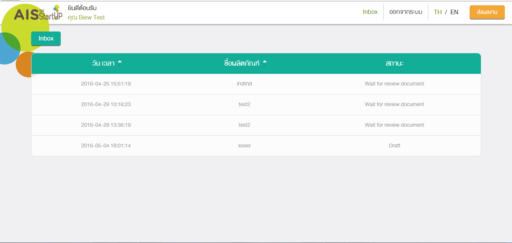 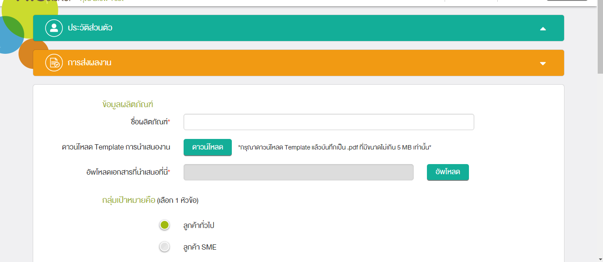
3. Ais Statup Admin (responsive) หน้าที่ (frontend)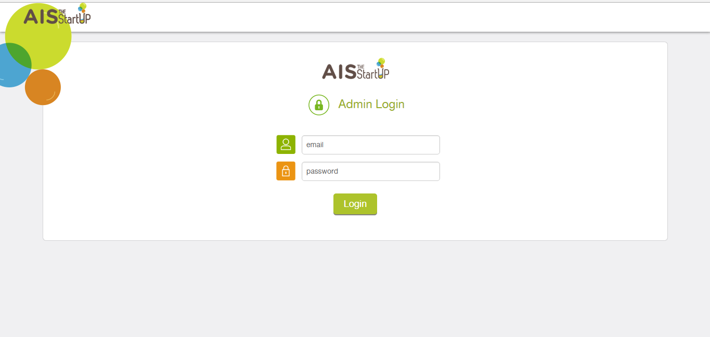
4. eService (responsive) Project นี้ผมได้มีส่วนรวมในการทำบ้าง menu ครับเช่น menu เติมเงินอัตโนมัติผ่านบัตรเครดิต, เลือกรับสาย, สมัครแพ็กเกจ และ Menu อื่นๆอีกครับ หน้าที่ (frontend)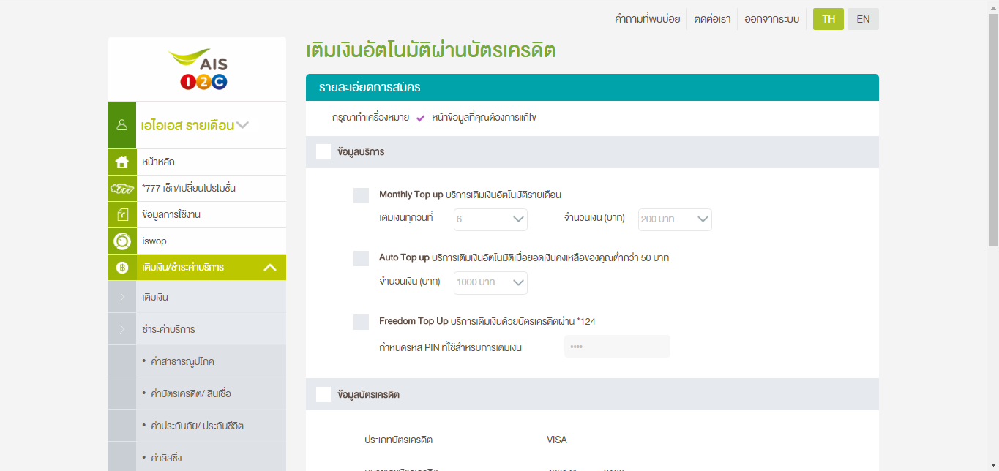 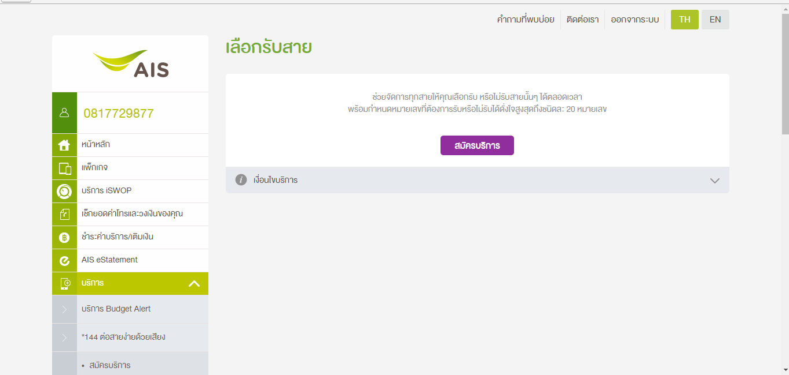 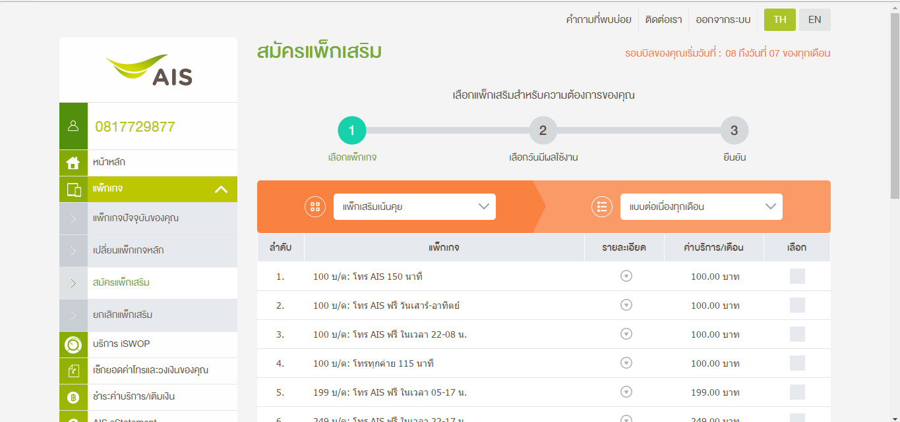
http://www.ais.co.th/eservice.html
5. Prinster (responsive) Project นี้ผมมีส่วนรวมในการเพิ่ม feature ใหม่ครับ สิ่งที่ เพิ่มคือ login facebook , Api facebook, search instargram หน้าที่ (frontend and backend)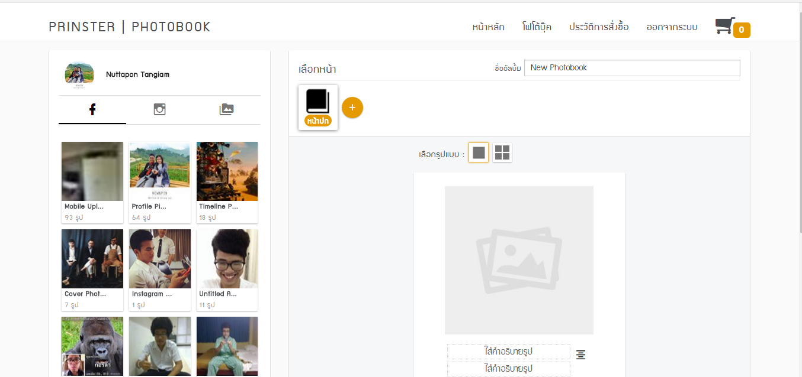 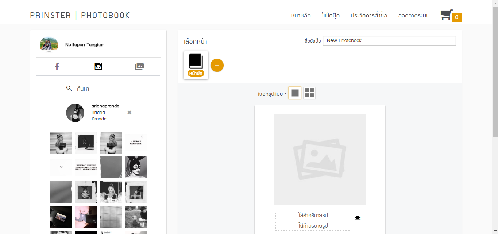
-
ประสบการณ์ฝึกงานสหกิจ 6 เดือน ที่ บริษัท Flyingcomma, Co., Ltd.(sellsuki)
ตัวอย่าง Project
ระบบ Order Package ของ sellsuki ในปี 2014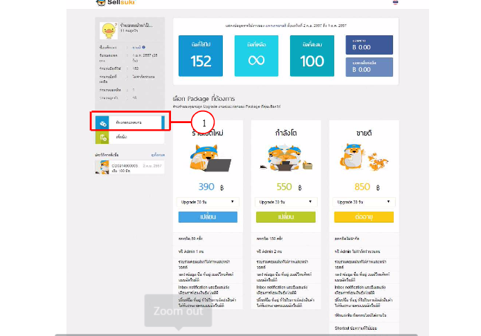
-
ประสบการณ์ในเวลาเรียนครับ ผมได้รับ Job กับเพื่อน Apisit Somtapthai หน้าที่ผม เขียน Backend เพื่อนผมเขียน frontend
คือ Project Uncle Shop
ตัวอย่าง Project
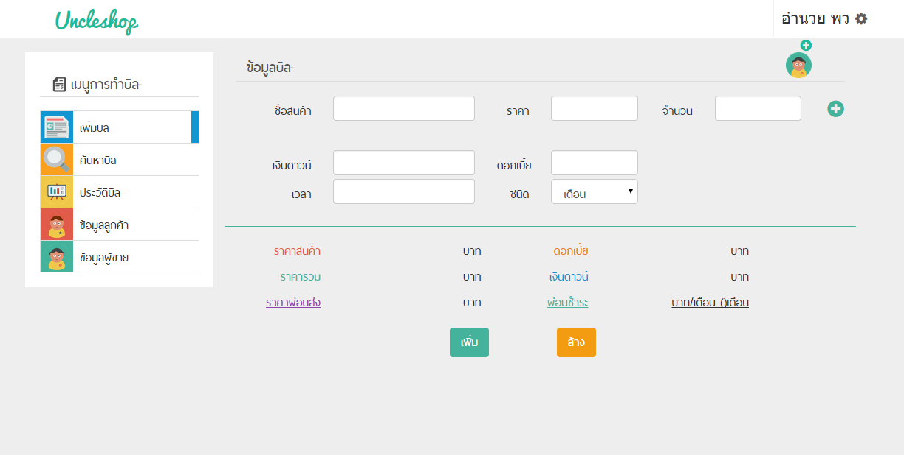 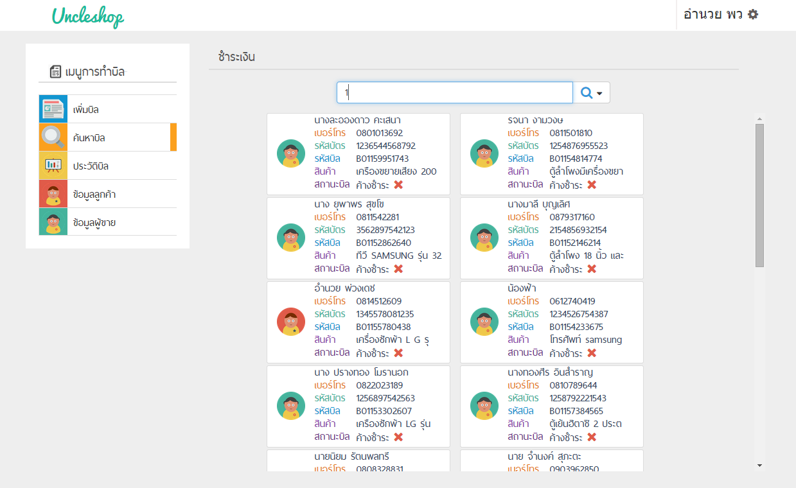
Skill
- Angular (middle)
- Javascript (middle)
- HTML
- CSS, SASS, LESS
- jQuery
- Nodejs (basic)
- My Sql, MongoDB
- PHP
- Laravel
- Unitest : karma, jasmine
- e2e test : Protractor
- Git
- Wordpress
- gulp
- MVC, OOP
- bootstap, foundation
- ผมพร้อมที่จะเรียนรู้สิ่งใหม่ ๆ อยู่เสมอ
- สามาถตัด CSS จาก Photoshop (ได้นิดหน่อย)